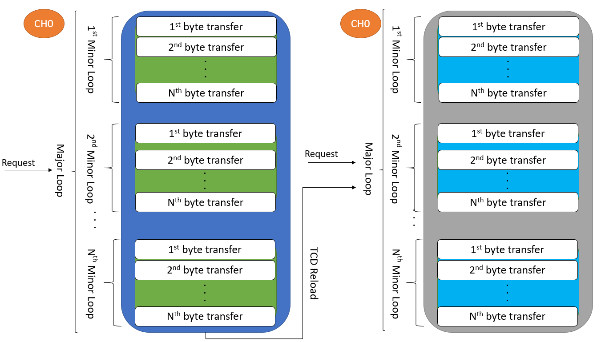

Description
Summary: The intent of this example is to illustrate how to implement the Scatter Gather feature of the eDMA
In this example we define two different strings, one containing the word "Hello " and the other containing "World"
then we procede to bring them together in a third array using two major loops of the eDMA. This showing a common use
for the scatter gather where we pick up information from different sources.

Basically the Scatter Gather feature of the DMA lets you change the TCD configuration of the channel that you are currently
working on at the end of a major loop. This can help to:
- Configure several source addresses and mix them in a destination.
- Set up several destinations and divide the content of a source.
- Transfer from several sources to several destinations as desired.
- You can also use this feature to implement a state machine type sub-system.
Design
- Initialization before main:
- Define TCD Source to the two arrays you we will mix together.
- Define Destination address to an array long enough to not lose information.
- Generate a TCD_t structure array aligned to 32 bits.
- Disable Watchdog.
- Initialize system clocks and Run mode.
- Configure DMA request to be always available.
- Save configuration of the TCD in the required TCDm array index.
- Push the configuration from the TCDm index to the TCD of the DMA channel.
- Enable DMA Channel Requests and interruptions.
Driver Functions:
main.c
#include "device_registers.h"
#define SOFF 1
#define DOFF 1
#define SIZE1 6
#define SIZE2 5
{
WDOG->CNT=0xD928C520;
WDOG->TOVAL=0x0000FFFF;
WDOG->CS = 0x00002100;
}
S32_NVIC->ICPR[0] |= 1 << (0 % 32);
S32_NVIC->ISER[0] |= 1 << (0 % 32);
TCDm[0].CSR &= ~(DMA_TCD_CSR_DREQ(1));
TCDm[0].CSR |= DMA_TCD_CSR_ESG(1);
TCDm[0].DLASTSGA = DMA_TCD_DLASTSGA_DLASTSGA(&TCDm[1]);
DMA->SERQ = DMA_SERQ_SERQ(0);
for (;;) {
}
return 0;
}
{
DMA->CDNE |= DMA_CDNE_CADN(0x0);
DMA->CINT |= 0;
}
 1.8.15
1.8.15